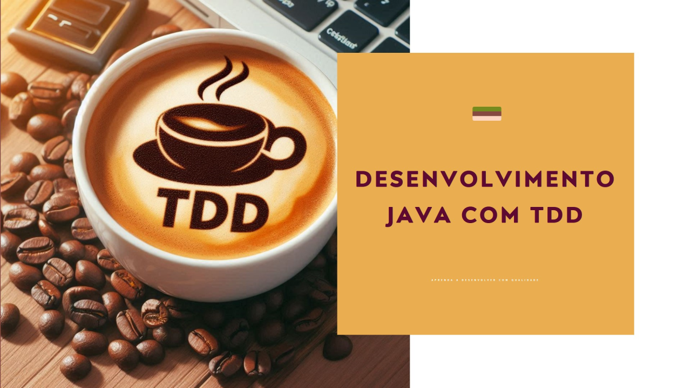
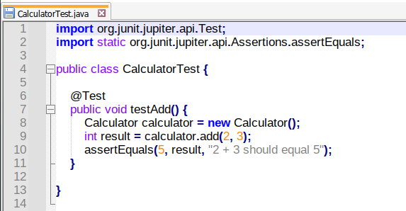
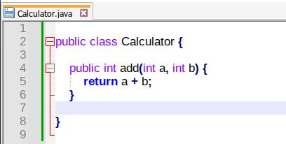

TDD (Test-Driven Development) aplicado ao desenvolvimento Java
TDD (Test-Driven Development) aplicado ao desenvolvimento Java

Desenvolvedor Java Sênior na Develcode
2 de junho de 2024
A Teoria do Desenvolvimento Orientado por Testes (TDD) é uma prática de engenharia de software que envolve a escrita de testes antes do código de produção. No desenvolvimento de aplicações Java, isso significa que, antes de escrever qualquer funcionalidade, você primeiro escreve um teste unitário (UT) que falha, depois escreve o código mínimo necessário para passar no teste e, finalmente, refina o código para padrões aceitáveis. Este ciclo é conhecido como vermelho-verde-refatorar. O TDD ajuda a garantir a qualidade do código, facilita a manutenção e pode conduzir a um design de software mais eficaz ao forçar o desenvolvedor a considerar a interface e a estrutura do código antes de sua implementação.
O desenvolvimento da aplicação alinhada com a teoria do desenvolvimento orientado por testes garante que o software funcione conforme o esperado. O ciclo TDD, conhecido como vermelho-verde-refatorar, começa com a escrita de um teste que falha (vermelho), seguido pela implementação do código mínimo necessário para passar no teste (verde), e finalmente a refatoração do código para melhorar a estrutura e a eficiência (refatorar). No contexto do desenvolvimento Java, isso pode envolver o uso de frameworks de teste, como JUnit, para escrever testes unitários. Por exemplo, você pode começar escrevendo um teste JUnit que falha para uma nova função, implementar a função em Java para passar no teste e, em seguida, refatorar o código Java para melhorar a qualidade e a eficiência.
Vamos enumerar algumas das ferramentas e frameworks mais utilizados para implementar TDD em Java:
JUnit: É o framework de testes mais popular para Java. Ele fornece anotações para identificar métodos de teste e contém assertivas para testar o comportamento esperado.
Mockito: É um framework de simulação popular que você pode usar para escrever testes para cenários complexos. Ele permite criar e configurar objetos fictícios (mocks), que podem ser usados para isolar o código sob teste para um ambiente mais controlado.
TestNG: É outro framework de testes para Java. Embora seja semelhante ao JUnit, ele oferece algumas funcionalidades adicionais, como suporte para testes paralelos e flexibilidade na configuração de testes.
Hamcrest: É uma biblioteca de assertivas que ajuda a escrever testes de maneira mais legível. Ela pode ser usada em conjunto com JUnit ou TestNG.
PowerMock: É um framework que estende outras bibliotecas de simulação, como Mockito, para adicionar funcionalidades adicionais, como simular métodos estáticos, construtores, e métodos finais.
Essas ferramentas, quando usadas corretamente, podem ajudar a implementar a metodologia TDD de forma eficaz no desenvolvimento de aplicações Java. Cada uma delas tem suas próprias características e benefícios, então a escolha entre elas depende das necessidades específicas do seu projeto.
Vamos considerar um exemplo simples de uma classe Calculator em Java que tem um método add(). Aqui está como você pode aplicar TDD para desenvolver essa funcionalidade.
Primeiro, você escreveria um teste unitário que falha. Usando o JUnit, isso pode parecer algo assim:

Código de teste para a classe CalculatorTest.java
Neste ponto, o teste falhará porque a classe Calculator e o método add() ainda não foram implementados. Agora você escreveria o código mínimo necessário para passar no teste:

Código da classe de Calculator.java.
Agora, o teste deve passar. A próxima etapa é refatorar o código, se necessário. Neste caso, o código é bastante simples, então não há muito a refatorar.
Para testes de integração, você pode querer testar como a classe Calculator interage com outras partes do seu sistema. Isso pode envolver o uso de bibliotecas de simulação, como Mockito, para simular essas interações.
Finalmente, para testes automatizados, você pode configurar uma ferramenta de integração contínua, como Jenkins ou Travis CI (vide nota rodapé), para executar automaticamente seus testes sempre que você fizer uma alteração no código. Isso ajuda a garantir que seu código esteja sempre funcionando conforme o esperado.
Lembre-se, este é apenas um exemplo simples. Em um projeto real, você provavelmente terá muitos testes cobrindo diferentes aspectos do seu código. O importante é seguir o ciclo vermelho-verde-refatorar: escreva um teste que falha, escreva código para passar no teste e, em seguida, refatore o código para melhorar a qualidade.
As boas práticas para escrever testes eficazes em Java incluem escrever testes pequenos e focados, usar nomes descritivos para testes, evitar dependências entre testes e usar dados de teste representativos. É importante que cada teste verifique apenas uma coisa e que o conjunto de testes como um todo tenha uma boa cobertura de código. Ao adotar TDD em projetos reais, alguns desafios comuns incluem resistência cultural à mudança, a necessidade de refatoração constante, a dificuldade de aplicar TDD a certos tipos de código (como código de interface do usuário ou código de banco de dados) e a necessidade de um bom entendimento do problema antes de começar a escrever testes. Apesar desses desafios, muitos desenvolvedores acham que o TDD resulta em código de maior qualidade e mais fácil de manter.
Vamos lembrar a Integração Contínua (CI) e a Entrega Contínua (CD) são práticas fundamentais no desenvolvimento moderno de software que se alinham perfeitamente com o TDD. No contexto do desenvolvimento Java, após cada ciclo de TDD, as alterações de código são integradas a um repositório compartilhado e testadas automaticamente, garantindo que qualquer problema seja detectado e corrigido rapidamente. As ferramentas de CI/CD, como Jenkins, Travis CI ou GitHub Actions, podem ser configuradas para executar automaticamente os testes unitários e de integração sempre que o código é alterado, garantindo que o código em produção esteja sempre em um estado testável e implantável. Isso permite que as equipes de desenvolvimento entreguem novos recursos e correções de bugs de forma mais rápida e confiável.
Para maximizar os benefícios do TDD no desenvolvimento Java, é crucial manter os testes pequenos, focados e independentes. A refatoração deve ser uma prática constante para melhorar a qualidade do código. Além disso, a integração do TDD com práticas de CI/CD pode aumentar a eficiência do processo de desenvolvimento. Quanto às tendências futuras, a crescente adoção de práticas de DevOps e a popularidade de microserviços podem levar a novas abordagens e ferramentas para o TDD. Além disso, a crescente importância da automação de testes em ambientes de entrega contínua pode levar a um maior foco no TDD em todos os aspectos do desenvolvimento de software.
Nota:
Jenkins é uma ferramenta de automação de código aberto, amplamente utilizada em ambientes DevOps para facilitar a integração contínua (CI) e a entrega contínua (CD) de projetos de software. Ele permite automatizar a compilação, o teste e a implantação de aplicações, além de gerenciar tarefas complexas e rotinas de trabalho. Sua flexibilidade e capacidade de se integrar com uma infinidade de ferramentas e plataformas de desenvolvimento tornam o Jenkins uma escolha popular. Além disso, seu extenso ecossistema de plugins permite que ele se adapte a quase qualquer necessidade de um projeto de software.
Travis CI é uma plataforma de integração contínua usada para testar e implantar códigos. Ele é integrado ao GitHub e é gratuito para repositórios com código aberto. O Travis CI permite que você escreva uma série de testes para garantir que seus códigos funcionem conforme o esperado através de testes unitários. Toda vez que você atualiza seu repositório, o Travis CI executa esses testes nos ambientes que você configurou. Ele suporta muitas linguagens e tecnologias, permitindo a realização de diferentes tipos de testes. Desde 15 de Junho de 2021, todos os processos foram unificados no domínio travis-ci ponto com.